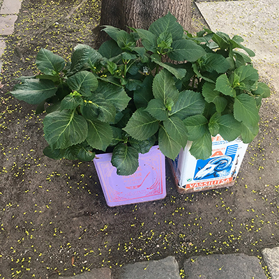
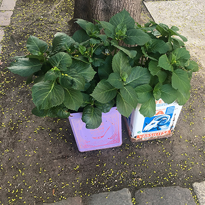

Lentement, Faulkner devenait fou. Après le petit-déjeuner, il attendit impatiemment dans le séjour tandis que sa femme mettait de l’ordre dans la cuisine. D’ici deux à trois minutes, elle serait partie, mais chaque matin, sans savoir pourquoi, il trouvait cette brève attente presque intolérable. Tout en baissant les stores vénitiens et en installant sur la véranda le fauteuil à dossier inclinable, il écouta Julia s’affairer avec compétence. En une seule série de gestes précis, elle empila tasses et soucoupes dans le lave-vaisselle, glissa dans le four automatique le rôti destiné au repas du soir et sélectionna un temps de cuisson, régla en mode économie le climatiseur, le réfrigérateur et le chauffe-eau à accumulation, libéra à l’intention du camion-citerne qui passerait l’après-midi l’accès aux tuyaux alimentant la cuve à mazout et déclencha l’ouverture de son volet de la porte du garage. Faulkner suivit cette séquence avec admiration, en dénombrant les phases successives à mesure que cliquetaient et s’enclenchaient boutons et sélecteurs.
Tu devrais être dans un B-52, pensa-t-il, ou dans la salle de commande d’une raffinerie de pétrole. En fait, Julia travaillait à la Clinique dans le service du personnel ; elle y passait sans nul doute la journée dans le même tourbillon d’efficacité, appuyant sur des boutons marqués « Jones », « Smith » et « Brown », aiguillant les paraplégiques vers la puche, les paranoïaques vers la droite. Elle entra dans le séjour et vint vers lui, tirée à quatre épingles dans le style femme d’affaires, tailleur noir et corsage blanc.
« Tu ne vas pas à l’École aujourd’hui ? » demanda-t-elle.
Faulkner secoua la tête en tripotant des papiers sur le bureau.
« Non, je suis toujours en période de méditation créatrice. Pour cette semaine encore. Le Pr. Harman a pensé que j’avais donné trop de cours et que j’étais fatigué. »
Elle hocha la tête, apparemment peu convaincue. Depuis trois semaines maintenant, il traînassait à la maison, somnolait sur la véranda, et elle commençait à avoir des soupçons. Faulkner comprit qu’un jour ou l’autre elle découvrirait la vérité, mais à ce moment-là il espérait être hors d’atteinte. Il aurait aimé pouvoir lui parler franchement, lui dire que depuis deux mois il avait démissionné de son poste de chargé de cours à l’École de commerce et n’avait aucune intention de le reprendre. Elle aurait une surprise de taille en s’apercevant que le dernier chèque qu’il avait touché était presque entièrement dépensé et qu’ils devraient peut-être se contenter d’une seule voiture. Qu’elle travaille ! pensa-t-il, de toute façon elle gagne plus que je ne gagnais. Avec un effort, il lui adressa un sourire. Fiche le camp ! criait-il mentalement, mais elle continuait de lui tourner autour avec indécision.
« Et ton déjeuner ? Il n’y a pas de…
« Ne t’inquiète pas, coupa Faulkner vivement avec un coup d’œil à la pendule. Depuis six mois, je ne mange plus. Tu peux déjeuner à la Clinique. »
Le simple fait de lui parler était devenu un effort. Il aurait voulu pouvoir communiquer avec elle par l’intermédiaire de notes écrites; il avait même acheté deux blocs à cet effet. Mais jamais il ne s’était décidé à lui suggérer franchement d’utiliser le sien ; il se contentait pour sa part de lui laisser des messages, sous prétexte qu’il était si absorbé intellectuellement que la parole dérangerait le cours de ses pensées. Chose curieuse, l’idée de la quitter ne lui était jamais vraiment venue. C’était une échappatoire qui n’aurait rien prouvé. Et d’ailleurs, il avait un autre plan.
« Tu n’auras besoin de rien ? demanda-t-elle en continuant de l’observer attentivement.
« Absolument pas », répondit-il en gardant le sourire.
C’était aussi éprouvant qu’une journée de travail. Elle lui donna un baiser rapide et fonctionnel, comme le coup de bec automatique d’une gigantesque machine à capsuler les bouteille. Il conserva son sourire jusqu’à ce qu’elle soit à la port . Puis elle disparut et le sourire s’éteignit lentement il reprit sa respiration et se décontracta progressivement à mesure que se libérait la tension accumulée dans ses bras et ses jambes. Il se promena quelques minutes au hasard dans la maison vide puis regagna le séjour, prêt à entamer le travail sérieux. En général, son programme ne variait pas. D’abord, il prit dans le tiroir central de son bureau un petit réveil-matin relié a une pile munie d’une courroie. Il s’assit sur la véranda, assujettit la courroie autour de son poignet, remonta le réveil et régla la sonnerie, puis le plaça sur une table à côté de lui, attachant son bras au fauteuil pour ne pas risquer de faire tomber le réveil par terre. Maintenant qu’il était prêt il s’appuya au dossier et contempla la scène qui s’offrait à son regard. Menninger Village, ou le Placard, comme on disait dans les parages, avait été édifié dix ans plus tôt. C’était un ensemble résidentiel autonome destiné aux membres du personnel qualifié de la Clinique et à leurs familles. Il y avait en tout soixante maisons dans le lotissement, dont chacune, conçue selon une règle architectonique donnée, gardait son identité interne tout en se fondant dans l’unité organique du groupe. Face à l’obligation de concentrer un grand nombre de maisons individuelles sur une surface de moins de deux hectares, les architectes avaient eu un double souci : d’abord, éviter une collection de clapiers uniformes, comme dans la plupart des grands ensemble ensuite, pourvoir un établissement psychiatrique majeur d’une réalisation hors série qui servirait de modèle au résidences pour cadres de l’avenir.
Néanmoins, comme tout le monde avait pu s’en rendre compte, habiter le Placard était l’enfer sur Terre. Les architectes avaient utilisé le système dit « psycho-modulaire » – à la base, tout est construit en forme de L –, ce qui entraînait un chevauchement général de tous les niveaux. Le lotissement tout entier était un assemblage de surfaces de verre dépoli, de rectangles blancs et de courbes, excitant au premier coup d’œil avec son côté abstrait (Life avait consacré plusieurs reportages illustrés à la « nouvelle tendance dans l’art de vivre » que suggérait le Village), mais informe et visuellement épuisant pour les gens qui y habitaient. La plupart des cadres supérieurs de la Clinique n’avaient pas tardé à déménager, et les maisons du Village étaient maintenant proposées en location à quiconque se laisserait persuader de s’y installer. Traversant la véranda, le regard de Faulkner isola du magma de formes géométriques blanches les huit maisons qu’il pouvait distinguer sans avoir à bouger la tête. Celles de ses voisins immédiats – à sa gauche, les Penzil, à sa droite, les McPherson –, et les six autres en face de lui, de l’autre côté d’un labyrinthe de jardins communicants découpé en ratodromes abstraits que délimitaient, à hauteur de ceinture, des panneaux blancs, des angles de verre dépoli et des écran en bois à claire-voie. Dans le jardin des Penzil se trouvait une collection de cubes alphabétiques géants d’un mètre de côté, avec lesquels jouaient leurs deux enfants. Souvent, ils laissaient sur l’herbe des messages destinés à Faulkner, parfois obscènes, d’autres fois simplement gnomiques et obscurs. Celui de ce matin appartenait à la seconde catégorie. Les cubes disaient : STOP AND GO
Tout en spéculant sur la signification globale de cette formule, Faulkner laissa son esprit se détendre, le regard flou fixé sur les maisons. Leurs contours déjà occultés se mirent peu à peu à se confondre et à s’estomper, tandis que les longs balcons et les rampes que les arbres cachaient en partie devenaient des formes désincarnées, de gigantesques unités géométriques. Le souffle lent, Faulkner ferma son esprit et, sans aucun effort, il effaça de sa perception l’identité de la maison d’en face.
Il avait maintenant sous les yeux un paysage cubiste, une collection de formes blanches disposées au hasard en dessous d’un arrière-plan bleu, sur lequel des taches floues, vertes et poudreuses, se balançaient lentement d’arrière en avant. Il se demanda paresseusement ce que représentaient exactement ces formes géométriques – il savait qu’elles avaient constitué, quelques secondes avant, une partie familière et immédiate de son existence quotidienne – mais il avait beau les redisposer spatialement dans son esprit ou tenter de les associer les unes aux autres, elles demeuraient… de simples formes géométriques à l’assemblage fortuit. Il y avait seulement trois semaines qu’il s’était découvert ce pouvoir. Un dimanche matin où il regardait d’un œil morne la télévision dans le séjour, le son coupé, il s’était soudain aperçu qu’il avait si complètement accepté et assimilé la forme matérielle du meuble en plastique qu’il n’arrivait plus à se rappeler sa fonction. Il lui avait fallu un effort mental considérable pour reprendre ses esprits et identifier à nouveau le téléviseur. Intéressé par ce phénomène, il avait expérimenté son pouvoir sur d’autres objets et découvert qu’il réussissait tout particulièrement avec ceux qui étaient surchargés d’associations, comme les machines à laver les voitures et autres biens de consommation.
Débarrassés de leurs alluvions de slogans publicitaires et de leurs connotations de prestige, ils conservaient avec la réalité un lien si ténu qu’il n’avait pas grand mal à les oblitérer totalement. L’effet était similaire à celui de la mescaline et d’autres hallucinogènes, sous l’influence desquels des creux dans un coussin deviennent aussi nets que des cratères lunaires, et les plis des rideaux des ondulations dans les vagues de l’éternité. Au cours des semaines suivantes, Faulkner avait soigneusement poursuivi ses expériences en développant sa faculté de mettre les objets hors circuit. Le processus fut lent, mais, petit a petit, il parvint à éliminer des groupes d’objets de plus en plus vastes : les meubles fabriqués en série du séjour, les gadgets rutilants de la cuisine, sa voiture dans le garage – une fois privée de son identité, elle ressemblait dans la pénombre a une énorme courgette, brillante et flasque ; il avait failli perdre la tête à essayer de l’identifier.
« Mais enfin, bon sang, qu’est-ce que ça peut bien être ? » s’était-il demandé avec impuissance, tout en riant à se tenir les côtes. Et à mesure que s’améliorait son pouvoir, il avait confusément entrevu une porte de sortie qui lui permettrait d’échapper au monde intolérable dans lequel il se trouvait au Village.
Il avait décrit sa faculté a Ross Hendricks, qui habitait à quelques maisons de là ; il était lui chargé de cours à l’École de commerce, et c’était le seul ami intime de Faulkner. « Peut-être qu’en réalité je sors du temps, avait hasardé Faulkner. Privée d un sens de la temporalité, la conscience a du mal à visualiser. Je veux dire qu’en éliminant le vecteur temps de l’objet identifié, on le libère de toutes ses associations cognitives quotidiennes. Ou alors, il se peut que j’aie trouvé par hasard le moyen d’inhiber les centres photo-associateurs qui servent normalement à identifier les objets visuels, de même qu’on peut arriver à écouter quelqu’un parler sa langue de manière à ce qu’aucun des sons n’ait le moindre sens. Tout le monde a tenté l’expérience un jour ou l’autre. » Hendricks avait hoché la tête.« D’accord, mais, ce n’est pas une raison pour faire carrière là-dessus. » Il observa Faulkner attentivement. « Tu ne peux pas fermer les yeux au monde comme ça. La relation entre sujet et objet n’est pas aussi univoque que le suggère le Cogito ergo sum de Descartes. À quelque degré que tu dévalues le monde extérieur, tu te dévalues toi-même autant. Il me semble que ton vrai problème, c’est d’inverser le processus. » Mais, malgré sa sympathie, Hendricks ne pouvait rien faire pour aider Faulkner. Et puis c’était agréable de voir le monde vierge à nouveau, de se vautrer dans un panorama sans fin d’images aux brillantes couleurs. Quelle importance s’il n’y avait là que la forme sans le contenu ?
Un déclic prononcé l’éveilla brusquement. Il se redressa en sursaut et s’empara du réveil dont il avait réglé la sonnerie sur onze heures. Il n’était que onze heures moins cinq. Le réveil n’avait donc pas encore sonné, et il n’avait pas non plus reçu la décharge de la pile. Pourtant, le bruit qui l’avait réveillé avait été très net. Mais il y avait tellement de robots et de servomécanismes dans la maison que ç’aurait pu être n’importe quoi. Une forme sombre se déplaça sur le panneau en verre dépoli qui formait la paroi latérale du séjour. Il vit une voiture s’arrêter et se garer dans l’étroite allée qui séparait sa maison de celle des Penzil ; une jeune femme en blouse bleue en descendit et commença à marcher sur le gravier. C’était la belle-sœur de Penzil, une fille d’une vingtaine d’années qui habitait chez eux depuis deux mois. Quand elle eut disparu dans la maison, Faulkner se hâta de détacher son poignet et se leva de son fauteuil. Ouvrant les portes de la véranda, il descendit tranquillement dans le jardin tout en regardant par-dessus son épaule. hâta de détacher son poignet et se leva de son fauteuil. Ouvrant les portes de la véranda, il descendit tranquillement dans le jardin tout en regardant par-dessus son épaule. La jeune fille, Louise (il ne lui avait jamais parlé), se rendait le matin à des cours de sculpture et, à son retour, prenait régulièrement une douche avant de monter sur le toit-terrasse pour un bain de soleil. Faulkner flâna au fond du jardin, jetant des cailloux dans le bassin et feignant de redresser certaines poutrelles de la pergola. Puis il s’aperçut que le fils McPherson, Harvey, quinze ans, s’approchait de lui par l’autre jardin.
« Tu n’es pas à l’école ? » demanda-t-il au jeune garçon dégingandé, visage de fouine sous une tignasse brune.
Il haussa les épaules.« Je devrais », répondit tranquillement Harvey. Mais j’ai convaincu maman que j’étais stressé, et Morrison – son père – a dit que je cogitais trop.
« Ici, les malades peuvent tout se permettre. »
Une forme rose y entra, régla le débit des robinets, et on entendit l’eau gicler.« Pour une fois je suis d’accord avec toi », approuva Faulkner tout en surveillant la cabine de douche par-dessus son épaule.
Faulkner fit un signe d’assentiment, les yeux occupés ailleurs.« Dites-moi, monsieur Faulkner », demanda Harvey, est-ce que vous vous rendez compte que, depuis la mort d’Einstein en 1955, il n’y a plus eu un seul génie sur Terre ? Depuis Michel-Ange, en passant par Shakespeare, Newton, Beethoven, Goethe, Darwin, Freud et Einstein, il y a toujours eu un génie en vie. Maintenant, c’est la première fois depuis cinq cents ans que nous sommes
livrés à nous mêmes.
« Je sais, dit-il. Moi aussi, je me sens sacrément seul quand j’y pense. »
Quand la douche fut terminée, il marmonna quelque chose pour prendre congé de Harvey et revint d’un pas nonchalant jusqu’à la véranda où il reprit sa position dans le fauteuil, le fil de la pile relié à son poignet. Méthodiquement, objet par objet, il se mit à déconnecter le monde environnant. Les maisons d’en face furent les premières à disparaître. Les masses blanches des toits et des balcons se résolurent rapidement en rectangles plats, les rangées de fenêtres en petits carrés de couleur évoquant les grilles d’une toile de Mondrian. Le ciel était une étendue bleue parfaitement neutre. Un avion s’y déplaçait au loin dans un bruit de moteurs. Faulkner refoula soigneusement l’identité de l’image puis il regarda l’étroite fléchette d’argent s’éloigner lentement comme un fragment de dessin animé onirique en train de se volatiliser.
En attendant que s’évanouisse le bruit des moteurs, il perçut le déclic non identifié qu’il avait déjà entendu plus tôt dans la matinée. Il avait retenti à moins de deux mètres, lui sembla-t-il près de la porte-fenêtre située à sa droite, mais il était trop absorbé par le kaléidoscope qui se déployait sous ses yeux pour secouer sa torpeur. Quand l’avion fut parti, il tourna son attention vers le jardin. Il effaça sans tarder la clôture blanche, la fausse pergola, le disque elliptique du bassin ornemental. Le sentier encerclait aussi la pièce d’eau, et quand Faulkner eut gommé de sa mémoire le souvenir des innombrables fois où il avait effectué ce parcours, il se dressa en l’air comme un bras de terre cuite brandissant un énorme joyau d’argent. Satisfait d’avoir oblitéré le Village et le jardin, Faulkner commença à déconstruire la maison. Ici les objets qui l’entouraient étaient plus familiers ; c étaient des extensions de lui-même intensément personnalisées. Il s’attaqua d’abord au mobilier de la véranda, transformant les fauteuils tubulaires et la table au plateau de verre en un trio de serpentins verts involutés, puis, tournant légèrement la tête, il choisit le téléviseur installé à sa droite dans le séjour. Il ne s’accrochait que mollement à son identité, et Faulkner n’eut aucun mal, en brouillant sa mise au point mentale, à réduire le coffret de plastique brun, veiné pour imiter le bois, à une tache amorphe et floue. Il libéra successivement la bibliothèque, le bureau, les lampadaires, les tableaux accrochés au mur de toutes les associations qui s’y rattachaient. Tous ces objets restèrent suspendus derrière lui dans le vide, comme du bois de charpente empilé dans quelque entrepôt psychologique, tandis que le sofa et les fauteuils blancs devenaient des nuages rectangulaires aux contours émoussés.
Faulkner n’était plus ancré à la réalité que par le réveil fixé à son poignet. Il tourna la tête de droite à gauche, effaçant systématiquement toute trace de signification du monde alentour, réduisant chaque objet à ses valeurs visuelles formelles. Puis, graduellement, ces images elles-mêmes se mirent à perdre leur sens, et Faulkner dériva à leur suite dans un monde de pure sensation psychique, où des blocs d’idéation planaient comme des champs magnétiques dans une chambre d’ionisation… La sonnerie du réveil explosa avec fracas et la pile projeta dans l’avant-bras de Faulkner des aiguillons de douleur. Le cuir chevelu parcouru de fourmillements, il se réinséra dans la réalité, arracha son bracelet, se massa rapidement l’avant-bras, et arrêta la sonnerie du plat de la main. Il resta assis quelques minutes à se frotter le poignet; il identifiait à nouveau tous les objets autour de lui, les habitations d’en face, les jardins, sa maison, conscient qu’un mur de verre se dressait maintenant entre eux et sa psyché. Il avait beau concentrer soigneusement son esprit sur le monde extérieur, il en restait séparé par un écran dont l’opacité se renforçait imperceptiblement. Et, à d’autres niveaux, des cloisons étanches se mettaient en place. Sa femme rentra à six heures, fatiguée de sa journée de travail, irritée de trouver Faulkner dans une semi-hébétude, et la véranda encombrée de verres sales.
« Eh bien, mets de l’ordre ! » cria-t-elle quand il quitta son siège pour le lui abandonner, s’apprêtant à monter au premier étage.
Faulkner rassembla une poignée de verre et les emporta dans la cuisine en marmonnant. Quand il voulut en sortir, Julia lui barrait le passage. Elle avait quelque chose en tête. Tout en sirotant rapidement son Martini, elle commença à le sonder à propos de son travail. Il supposa qu’elle avait dû téléphoner à l’École sous un prétexte quelconque et voir ses soupçons renforcés après avoir fait allusion à lui en passant. « Il y a une absence totale de coordination, déclara Faulkner. Deux jours d’absence, et plus personne ne se rappelle que vous bossez ici. » À la suite d’un effort de concentration massif, il avait réussi à éviter de regarder sa femme en face depuis son arrivée. En fait, ils n’avaient pas échangé un coup d’œil direct depuis une semaine. Il se demandait avec espoir si, à la longue, elle n’en n’aurait pas assez.« Tu ne vas pas laisser cet endroit dan un état pareil. Qu’est-ce qui te prend ? Allez, fais un peu la jonction ! »
Le dîner fut un lent supplice. Les relents du rôti dans le four automatique avaient imprégné la maison tout l’après-midi. Incapable d’avaler plus que quelques bouchées, il n’avait rien sur quoi fixer son attention. Par chance, Julia avait un solide appétit, et il pouvait regarder le haut de sa tête quand elle mangeait et détourner les yeux quand elle levait les siens. Après le dîner, heureusement, il y eut la télévision. Ils étaient assis dans l’obscurité devant le poste, et le crépuscule effaçait les autres maisons du Village. Julia pestait contre la qualité des émissions.
Faulkner eut un geste désinvolte.« Pourquoi regarder la télé tous les soirs ? demanda-t-elle. C’est une totale perte de temps. »
Calé en arrière dans son fauteuil, les mains apparemment derrière la nuque, il pouvait à volonté se boucher les oreilles avec les doigts pour annuler les sons du programme.« C’est un document social intéressant. »
Il observa les personnages qui remuaient la bouche silencieusement comme des poissons atteints de démence. Les gros plans des mélodrames étaient particulièrement hilarants, et plus tragique était la situation, plus burlesque l’effet obtenu.« Il ne faut pas faire attention à ce qu’ils disent, dit-il à sa femme. Ça a plus de sens comme ça. »
Une tape sèche s’abattit sur son genou. Il leva la tête et vit sa femme penchée au-dessus de lui les sourcils froncés, la bouche s’agitant furieusement. Les doigts toujours pressés contre les tympans il examina son visage avec détachement, se demandant un instant s’il allait parachever le processus et la déconnecter comme il avait déconnecté le reste du monde au cours de la journée. Quand il en arriverait là, il ne prendrait pas la peine de mettre le réveil. Il l’entendit mugir :
Il se redressa en sursaut assourdi par la scène de ménage sur l’écran qui accompagnait la voix de sa femme.« Harry ».
« Qu’est-ce qu’il y a ? Je dormais ? »
Faulkner grommela et a femme fit un geste menaçant.« Tu veux dire que tu étais en transe ! Pour I’amour du ciel répond quand je te parle. Je te disais que j’ai vu Harriet Tizzard cet après-midi. »
Pendant qu’elle continuait de jacasser Faulkner se radossa confortablement. Quand elle eut regagné son fauteuil il remit les mains derrière sa nuque. Après quelques grognements polis il glissa ses doigt dans ses oreilles, neutralisant la voix de sa femme, puis il continua de regarder tranquillement l’écran silencieux. À dix heures le lendemain matin il était déjà sur la véranda, le poignet relié au réveil. Pendant l’heure suivante, il contempla les formes désincarnées qui flottaient autour de lui, le esprit libéré de ses anxiétés. Quand le réveil se déclencha à onze heure il se sentait reposé et détendu. II fut capable pendant quelques instants d’observer les maisons du voisinage avec la curiosité visuelle que les architectes auraient voulu susciter. Toutefois, les choses ne tardèrent pas à sécréter leur habituel poison, à crouler sous le poids des associations au contexte crispant, et, au bout de dix minutes il consultait sa montre avec agitation. Quand la voiture de Louise Penzil s’engagea dans l’allée, il débrancha le réveil et sortit tranquillement dans le jardin, la tête baisée pour neutraliser le grand nombre de maisons possible. Tandis qu’il flânait autour de la pergola, replaçant les poutrelles délogées par la croissance de rosiers, le tête de Harvey McPherson apparut soudain au-dessus la clôture.« Je sais que tu ne peux pas sentir les Tizzard mais j’ai décidé que nous devrions le voir plus souvent… »
« Harvey tu es encore là ? Tu ne vas toujours pas en classe ? »
« J’applique une méthode de relaxation conseillée par ma mère », expliqua Harvey. Je trouve que l’ambiance de compétition de l’école est…
Sans se démonter, Harvey insista :« Moi aussi j’essaie de me détendre, coupa Faulkner. Restons en là. Tu ne peux pas aller ailleurs ? »
« Monsieur Faulkner, j’ai une sorte de problème métaphysique qui me tourmente. Peut-être que vous pourriez m’aider. La seule valeur absolue dans l’espace-temps est censée être la vitesse de la lumière. Or toute estimation de cette vitesse implique en fait le facteur temps, qui est subjectivement variable… alors qu’est-ce qui reste ? »
Il regarda par-dessus son épaule vers la maison des Penzil puis se retourna vers Harvey d’un air maussade. Harvey fronça les sourcils et essaya de mettre de l’ordre dans sa tignasse.« Les filles »., répondit Faulkner.
« Qu’est-ce que vous dites ? »
« Les filles, répéta Faulkner. Tu sais bien, le sexe faible, le grillon du foyer… »
Voilà qui va te clouer le bec, songea Faulkner. Il se mit a scruter la maison des Penzil à travers les poutrelles de la pergola, mais il aperçut soudain Harry Penzil, debout à la porte de sa véranda, qui l’observait d’un air renfrogné. Faulkner se détourna précipitamment et feignit de s’occuper de ses rosiers. Quand il eut réussi à rentrer sans perdre la face, il transpirait abondamment. Harry Penzil était le genre d’homme capable d’escalader les clôtures pour venir le boxer à domicile. Faulkner se prépara un verre dans la cuisine et l’emporta dans la véranda, où il s’assit en attendant d’avoir surmonté son embarras pour régler le réveil. L’oreille tendue pour surprendre tout bruit qui pourrait provenir de chez les Penzil, il perçut à nouveau le déclic familier du côté de la maison de droite. Il se pencha en avant et examina la cloison de la véranda. C’était une paroi d’épais verre dépoli, entièrement opaque, soutenant des poutres blanches auxquelles étaient fixées des plaques de polyéthylène ondulées. De l’autre côté de la véranda s’élevait un treillage métallique de trois mètres de haut, garni de camélias, qui doublait la clôture sur environ sept mètres de longueur, masquant les portions les plus proches des jardins adjacents. En inspectant soigneusement ce treillage, Faulkner remarqua soudain les contours d’un petit objet noir et rectangulaire posé sur un mince trépied, à pas plus d’un mètre de la fenêtre ouverte de la véranda. Au centre de l’objet, le disque d’un petit œil de verre le fixait sans ciller à travers l’une des lattes horizontales.« Oh ! Je vous en prie ! » Harvey rentra chez lui, marmonnant et secouant la tête.
Un appareil photo ! Faulkner se leva d’un bond et le contempla bouche bée. Des jours durant, il s’était déclenché à son insu. Dieu seul savait quels instantanés de sa vie privée Harvey avait ainsi enregistrés pour s’amuser. Bouillant de colère, Faulkner s’approcha du treillage, écarta deux des tiges métalliques et s’empara de l’appareil photo. Au moment où il essayait de le faire passer par l’ouverture, le trépied tomba avec un bruit de ferraille, et il entendit quelqu’un se lever précipitamment de son siège sur la véranda des McPherson. Faulkner tira sur l’appareil, arrachant le fil de déclenchement à distance relié au levier de l’obturateur, et le ramena de son coté. Il ouvrit le boîtier, enleva la pellicule, puis jeta l’appareil à terre et l’écrasa sous son talon. Il rassembla ensuite les morceaux et, de sa fenêtre, les lança par-dessus la clôture au fond du jardin de McPherson.
Il rentrait pour finir son verre quand le téléphone sonna. « Oui, qu’est-ce que c’est ? dit-il d’une voix sèche en décrochant.
C’est toi Harry ? Ici Julia.
Qui ? demanda Faulkner sans réfléchir. Ah ! oui. Eh bien qu’est-ce qui se passe ?
Des drôles de choses, apparemment. » La voix de sa femme s était durcie.« Je viens d’avoir une longue conversation avec le Pr. Harman ; il m’a dit que tu avais donné ta démission il y a deux mois. Harry, à quoi joues-tu ? Je n’en reviens pas.
Je n’en reviens pas non plus, rétorqua Faulkner d’un ton badin. C’est la meilleure nouvelle que j’aie reçue depuis des années. Merci de me l’avoir confirmée.
« Harry ! » Elle criait, maintenant. « Reprends tes esprits ! Si tu t’imagines que je vais t’entretenir, tu te trompes lourdement. Le Pr. Harman a dit…
La voix de Julia s’éleva jusqu’à des glapissements hystériques ; il éloigna le combiné de son oreille avant de le replacer doucement sur son support. Au bout d’un moment, il le décrocha à nouveau et le posa sur la pile de annuaires.Harman, ce sinistre idiot ? interrompit Faulkner. Tu ne te rends donc pas compte qu’il a cherché à me rendre fou ? »
Dehors, le matin de printemps était suspendu sur le Village comme un rideau de silence. Çà et là le feuillage d’un arbre frémissait dans l’air chaud, ou une fenêtre s’ouvrait, renvoyant un éclat de soleil, mais partout ailleurs régnaient le calme et l’immobilité. Assis sur la véranda, pile et réveil abandonné par tette à côté de lui, Faulkner s’enfonça de plus profondément dans sa rêverie intime, dans le monde désagrégé en suspens autour de lui, réduit à des formes et des couleurs. Les maisons d’en face avaient disparu, remplacées par de longues bandes rectangulaires blanches. Le jardin était une rampe verte au bout de laquelle planait l’ellipse d’argent du bassin. La véranda était un cube transparent au centre duquel il flottait comme une image dans un océan d’idéation. Il avait annihilé non seulement le monde qui l’entourait, mais même son propre corps ; son tronc et ses membres semblaient des extensions de son esprit, formes désincarnées dont les dimensions physiques pesaient sur sa pensée comme la perception qu’aurait un rêve de sa propre identité.
Quelques heures plus tard, tandis qu’il gravitait lentement à l’intérieur de sa rêverie, il fut conscient d’une intrusion subite dans son champ de vision. En accommodant son regard, il vit avec surprise la silhouette vêtue de sombre de sa femme debout devant lui, proférant des paroles de colère et brandissant son sac. Pendant quelques minutes, Faulkner examina l’entité autonome qu’elle constituait ordinairement, les proportions de ses jambes et de ses bras, les méplats de son visage. Ensuite, sans bouger, il commença à la déconstruire mentalement, en l’effaçant littéralement membre par membre. D’abord, il oublia ses mains qui s’agitaient et se tordaient comme des oiseaux frénétiques, en éliminant de sa mémoire tout souvenir de leur énergie et de leur mouvement. Enfin, il oublia son visage qui s’approchait du sien, la bouche tiraillée en tous sens, et ce ne fut plus qu’une masse vague d’un gris rosâtre, déformée par des arêtes et de stries, fendue d’ouvertures qui s’ouvraient et se refermaient comme les évents de quelque insolite soufflet. Se détournant pour contempler à nouveau le silencieux paysage de rêve, il avait conscience de sa présence gesticulante derrière lui. Et cette présence lui paraissait grotesque et difforme, un amas d’angles importuns. Il se produisit enfin entre eux un bref contact physique. Il fit un geste pour la repousser, mais sentit qu’elle s’accrochait à son bras comme un chien. Il avait beau se secouer pour se libérer, elle se cramponnait à lui tout en se démenant dans un déluge de colère.
Le rythme saccadé de ses mouvements était brutal et gauche. Il tenta d’abord de les ignorer, puis il commença à la brider et à la lisser, façonnant ses contours anguleux pour les adoucir et les arrondir. Tandis qu’il œuvrait ainsi, la malaxant comme un sculpteur qui modèle l’argile, il remarqua une série de craquements que dominait un cri persistant, mais à peine audible. Quand il eut fini, il la laissa tomber sur le plancher, masse élastique et spongieuse qui glapissait faiblement. Faulkner retourna à sa rêverie, réassimilant sans peine le paysage inchangé. L’accrochage avec sa femme lui avait remis en mémoire le seul embarras qui subsistait : son propre corps. Bien qu’il en ait oublié l’identité, il n’en continuait pas moins de se faire sentir, pesant et chaud, vaguement inconfortable, comme un lit mal fait qui vous empêche de vous endormir. Ce qu’il recherchait, c’était l’idéation pure, la sensation de l’être psychique que rien ne vient troubler et qui se situe au-delà de tous les intermédiaires physiques, le seul moyen qui lui permettrait d’échapper à la nausée du monde extérieur.
Quelque part dans son esprit une idée se forma. Il se leva de son fauteuil, traversa la véranda et se propulsa vers le fond du jardin, inconscient des mouvements matériels que cette action impliquait. Dissimulé par les rosiers de la pergola, il se tint cinq minutes au bord du bassin, puis entra dans l’eau. Ses jambes de pantalon se gonflèrent autour de ses genoux et il avança lentement. Quand il fut au centre, il écarta les plantes aquatiques, s’assit, puis s’allongea dans l’eau peu profonde. Lentement, il sentit la masse meuble de son corps se dissoudre, sa température devenir plus froide et moins oppressante. En regardant à travers la surface de l’eau, a quinze centimètres au-dessus de son visage, il vit le disque bleu du ciel, vierge et sans nuage, se dilater pour embrasser toute l’étendue de sa conscience. Il avait enfin trouvé la toile de fond parfaite, le seul champ d’idéation possible, le continuum absolu de l’existence, non contaminé par des excroissances matérielles. Sans cesser de l’observer, il attendit que le monde se dissolve et le libère.
The Overloaded Man (1961)
Extrait de l’ouvrage, Nouvelles complètes, volume 1
(1956-1962), J. G. Ballard, Éditions Tristam, Auch, 2015